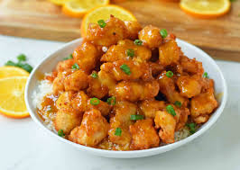

Chinese Orange Chicken Made With Crispy Fried Chicken Covered In An Authentic Orange Sauce. The Ultimate Chinese Orange Chicken Recipe Which Is Way Better Than Take-out.
Orange Chicken
Filet mignon is a steak cut of beef taken from the smaller end of the tenderloin, or psoas major of the cow carcass, usually a steer or heifer. In French, this cut is always called filet de bouef
Beef Fillet MIGNON
Sushi is a traditional Japanese dish of prepared vinegared rice, usually with some sugar and salt, accompanying a variety of ingredients, such as seafood, often raw, and vegetables. Styles of sushi and its presentation vary widely, but the one key ingredient is "sushi rice", also referred to as shari, or sumeshi 
Sushi